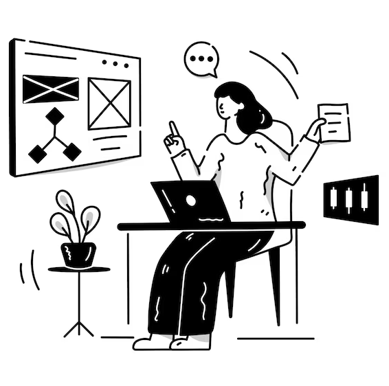

Welcome to my Personal WebPage
Web developers are professionals who build, maintain, and improve websites and web applications. Their work combines technical skill, creativity, and problem-solving to create digital experiences that are functional, visually appealing, and user-friendly. Web developers typically specialize in three main areas: front-end, back-end, and full-stack development. Front-end developers focus on the parts of a website users interact with directly. They use technologies like HTML, CSS, and JavaScript to design layouts, ensure responsiveness across devices, and create smooth user experiences. Back-end developers handle the behind-the-scenes logic, working with databases, servers, APIs, and frameworks such as Node.js, Django, or Laravel to ensure data flows correctly and securely. Full-stack developers cover both sides, offering versatility across the entire development process. Modern web development also involves version control systems like Git, performance optimization, security practices, and staying updated with rapidly evolving tools and frameworks. Web developers often collaborate with designers, product managers, and content creators, making communication an important part of the job. Overall, web developers play a crucial role in building the digital world—from simple websites to complex platforms—ensuring that online experiences remain fast, reliable, and engaging for users everywhere.
Hobbies like singing, drawing, coding, and fishing offer a rich blend of creativity, skill-building, and relaxation. Each hobby provides a unique way for people to express themselves, unwind, and explore their interests. Singing is a joyful and expressive activity that helps improve confidence, emotional well-being, and communication skills. Whether practiced casually or professionally, it allows individuals to connect with their emotions and share stories through music. Drawing nurtures imagination and sharpens observation skills. It encourages patience, attention to detail, and artistic expression. From simple sketches to detailed illustrations, drawing is a powerful way to translate thoughts and emotions into visuals. Coding, on the other hand, is a more technical hobby but equally creative. It enhances logical thinking, problem-solving abilities, and innovation. Coding empowers people to build websites, apps, or even small tools that automate everyday tasks, making it both fun and practical. Fishing provides a peaceful escape from busy routines. It teaches patience, focus, and appreciation for nature. Many people enjoy fishing not only for the catch but also for the calm environment and time spent outdoors. Together, these hobbies balance creativity, intellect, and relaxation, offering meaningful ways to grow personally while enjoying quality leisure time.